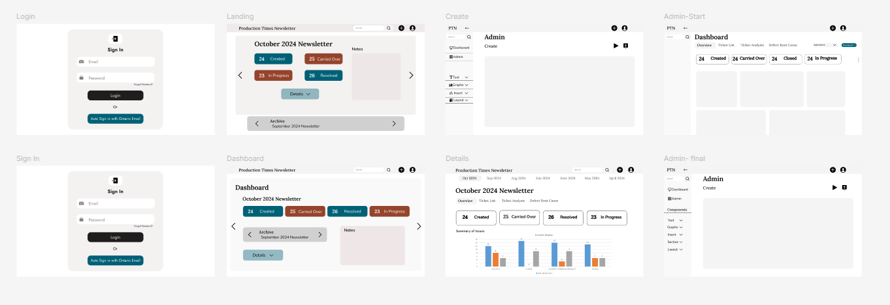
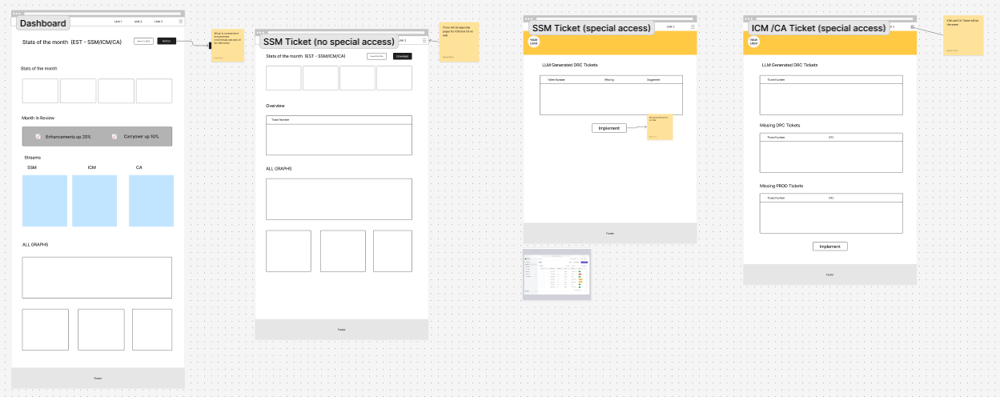
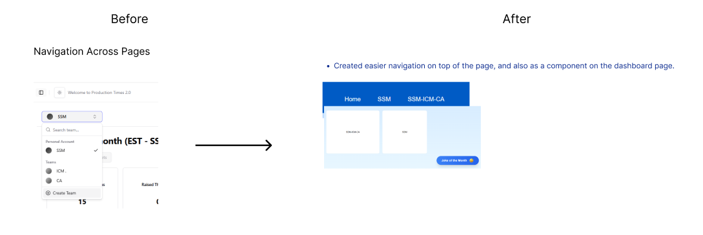
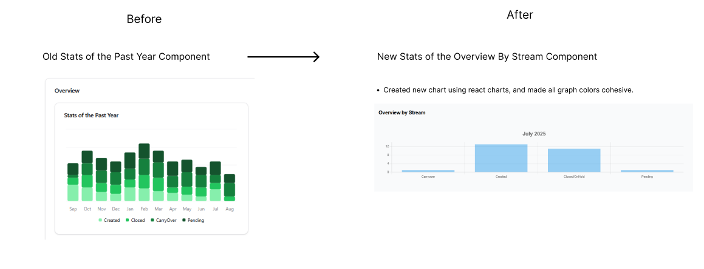
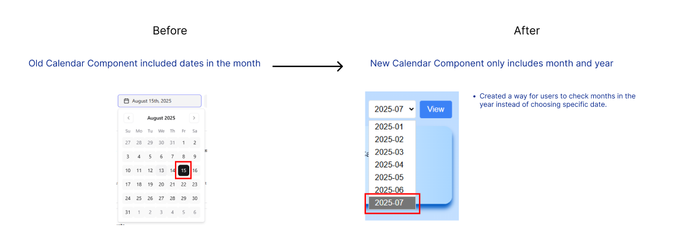
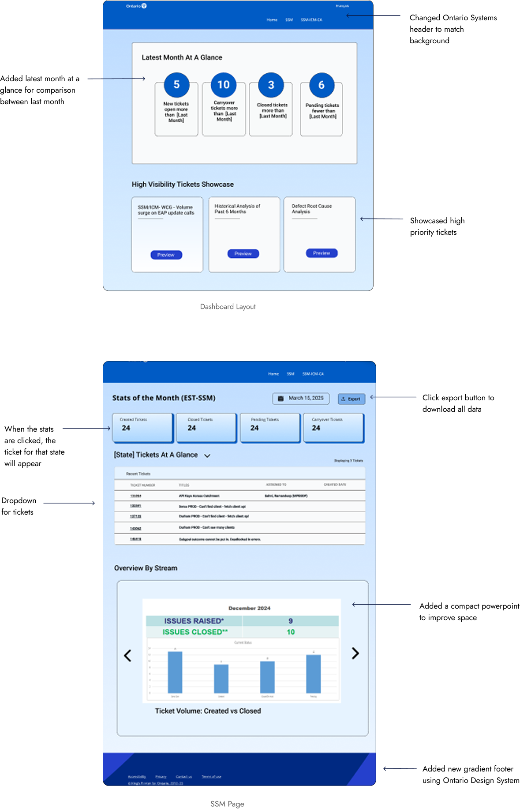

Internship / Production Times Ticket Newsletter
Production Times is an internal ticket processing system for the Ontario Public Service in the Digital Solutions Branch. It analyzes tickets created by developers for the three major data streams.
Software Engineer & Frontend Developer
Figma, FigJam, React, React Charts, Excel, PowerPoint
Jan 2025 – Aug 2025
4 Students
Problem
Employees struggled to track ticketing metrics across three systems, leading to delays and miscommunication.
The manual ticket processing system had a few problems:
- 7-8 Excel files used manually to track tickets.
- 20+ hours/month spent analyzing ticket data.
- 5+ hours/month spent formatting PowerPoint newsletters.
- Manual creation of graphs and charts.
- 2-3 day delays in retrieving missing ticket info from developers.
These issues made it difficult for leadership to evaluate team performance, and caused co-op students to spend hours tracking down missing details, which sometimes delayed newsletter releases.
7+ Excel Files
used to manually compile ticket data before
20 Hours/Month
spent manually analyzing ticket data
3 major ticket streams
unified into one dashboard
Design process
We began the design sprint with minimal requirements, to encourage all four of us designers to interpret the problem creatively. I proposed designing a flexible newsletter application that allows users to preview templates or start a new newsletter from scratch. I emphasized a "past newsletters" browsing experience so that users could also access any missed information from past newsletters, making it easy to revisit previous reports and avoid redundant work.
I wanted the user to be able to preview the newsletter from the app, and to either start a new newsletter from scratch or use the template.


After our initial design sprint, all the interns met to review each other's work with our supervisor. We discussed the pros and cons of each design, identifying overlaps and gaps. Some of these ideas were kept, and others were iterated on or dropped based on user clarity. Once we aligned on a shared direction, we refined the work into one final design.

Developer feedback
We presented our prototypes to senior developers. They suggested:
- Prioritizing critical graphs, which were buried at the bottom of the dashboard — Defect Root Cause needed to move higher.
- Creating an individual page for SSM and another for all three streams, mirroring the old PowerPoint that was sent out.
Based on this, I restructured the layout and mimicked the old PowerPoint format.


Iterations
We presented the app three times and refined it based on feedback. Major changes included:



Implementation
Design
- Redesigned the entire app with a modern blue palette
- Created "Stats of the Month" and "Joke of the Month" components
- Used React Charts for responsive graphs

Final designs


Learnings and reflections
My biggest takeaway from this project was realizing how crucial documentation is during handoffs.
- There were many intern handoffs as terms ended, and the lack of clear process notes and component guidelines made it difficult to iterate confidently.
- This experience taught me the value of design systems and onboarding materials. I also learned how much the design process can change depending on the users.